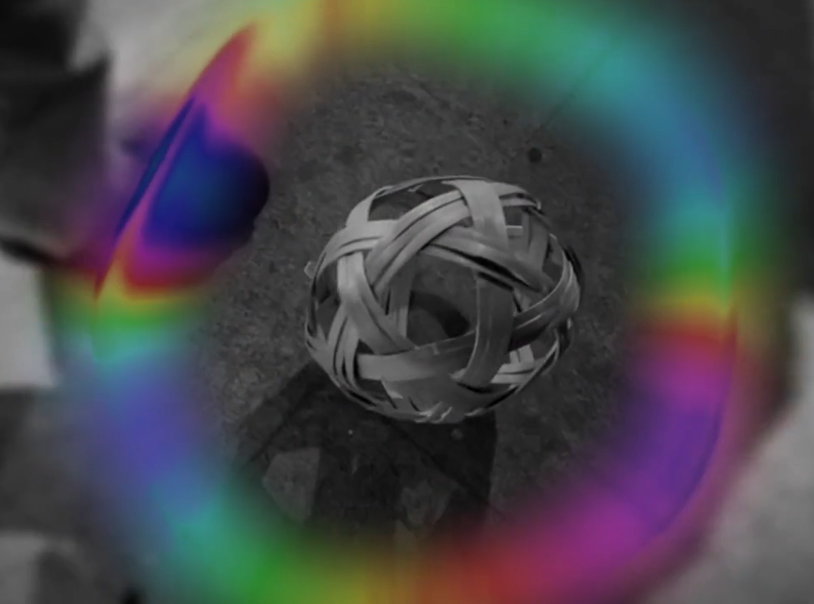

Introduction
My project is based on the concern about the current situation of children's lives in the epidemic era, where children's recreational environment is confined indoors and they cannot go out to play as they please. Inspired by children's desire for nature and free playgrounds, I designed a project that combines sensors and juju to inspire music and images. In this project, I wanted to delve into the violation of children's interests by commercialization. Through this project, I hope that children will be able to play and entertain themselves in a natural environment and regain their love for nature.
Concept and Background Research
My project was inspired by the concern over the current state of children's lives in the era of the epidemic as their recreational environment was confined indoors and children were not able to go out and play as much as they wanted. Growing up in nature provides children with a rich experience of life, which promotes healthy physical and mental development. However, in the urbanisation process, concrete and steel buildings have gradually replaced nature, depriving children of the opportunity to be close to nature. This issue has attracted widespread attention, and scholars have found through their research that children's interaction with nature is important to their psychological, physical and social development. Therefore, I wanted to alleviate the negative impact of the restrictions on children's lives due to the epidemic through an interactive design solution that would allow children to experience more natural landscapes and playfulness in an indoor environment. At the same time, through this project, I also hope to reflect on the infringement of commercialisation on children's interests and to call on society to pay attention to the physical and mental health and growth of children.
Technical Implementation
In my project, I used a gyroscope sensor and an Arduino board to detect the movement state of the cuju. When children play with the cuju, the sensor detects the movement status of the cuju and sends the detected data to the Max/MSP software via OSC communication. In Max/MSP, I write programs to convert the state of cuju movement detected by the sensors into musical and visual effects. These effects include nature sounds such as streams, wind, bird calls, and waves made of transparent film, presenting a contrast between the natural landscape and the realistic children's living environment polluted by commercialization.
Specifically, I wrote two main programs in Max/MSP, one for the music effects and the other for the visual effects. In the music program, I control the different sound effects by converting the state of the cuju's movement detected by the sensors into MIDI signals. For example, when the cuju moves upward, it triggers a high note, and when the cuju moves downward, it triggers a low note. Also, I added natural sound effects, such as streams, wind, and bird calls, to create a more natural environment.
For the visual program, I used transparent film and a projector to project images of waves onto the ground. When children play cupping, they will kick on the transparent film of the waves to create a wave effect. I used Max/MSP's video processing library to convert the state of cuju movement detected by the sensors into a visual effect to make the transparent film appear as waves fluctuating.
Using Arduino and Max/MSP programming technologies were an important part of my project because they provide control and integration of hardware and software, allowing for a richer interactive experience. Also, these technologies are widely available and easy to learn, enabling more people to participate in my project and work together to create a better gaming and entertainment experience.
Reflection and Future Development
In my future research, I will further explore the applications and benefits of Arduino and Max/MSP programming technologies, especially in the design of children's play and entertainment environments. I will also explore other emerging technologies and approaches, such as virtual reality and augmented reality, to enhance children's play and entertainment experiences and effectiveness. At the same time, I will further reflect on the infringement of commercialization on children's interests and try to propose some countermeasures and policy recommendations to protect children's rights and interests.
Besides, I think I should also pay more attention to design and user experience in my future projects. In this project, although I considered the contrast between the natural environment and the commercialized reality, there are still shortcomings in the design. For example, I did not consider children's habits and preferences during play, as well as their enjoyment of music and visual effects. In future projects, I should pay more attention to user experience, consider children's needs and expectations from their point of view, and provide a game and entertainment experience that is more relevant to them.
References
- Arduino. 2018. “Arduino .” Arduino.cc. 2018. https://www.arduino.cc/
- “Cycling ’74.” 2010. Cycling74.com. 2010. https://cycling74.com/.
- Hillman, C. H., Pontifex, M. B., Raine, L. B., Castelli, D. M., Hall, E. E., & Kramer, A. F. 2009. “The Effect of Acute Treadmill Walking on Cognitive Control and Academic Achievement in Preadolescent Children. Neuroscience, 159(3), 1044-1054.” 2009.
- Reeves, Byron, and Clifford Ivar Nass. 2006. The Media Equation : How People Treat Computers, Television, and New Media like Real People and Places. Stanford, Calif.: Csli Publ. Swindell. 2007. “OpenSound Control: A New Protocol for Communicating with Sound Synthesizers. Computer Music Journal, 31(3), 54-71.” 2007.
- “The Necessity of Urban Green Space for Children’s Optimal Development.” n.d. Www.unicef.org. https://www.unicef.org/documents/necessity-urban-green-space-childrens- optimal-development.
- “What Are Children’s Rights? | Children’s Rights Alliance.” 2016. Childrensrights.ie. 2016. https://childrensrights.ie/childrens-rights-ireland/childrens-rights-ireland.
- Wikipedia Contributors. 2019. “Cuju.” Wikipedia. Wikimedia Foundation. November 22, 2019. https://en.wikipedia.org/wiki/Cuju.